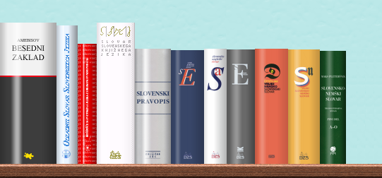

Knjižna polica slovarjev
Prevodov, razlag in sopomenk besed vam ni več treba iskati v različnih slovarjih, raztresenih po spletu. Vse to je dosegljivo na enem mestu, brezplačno, na najbolj enostaven način.
Enostavno, da bolj ne more biti.
Vpišite iskano besedo ali besedno zvezo. In to je vse! Odprla se vam bo zakladnica prevodov, razlag in sopomenov besed. Termania bo sama poskrbela, da bodo najboljši zadetki na pravih mestih. Če bo zadetkov preveč, uporabite enostavne filtre.